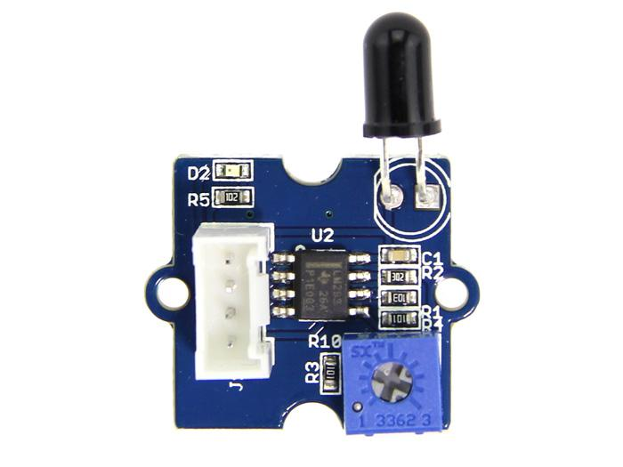
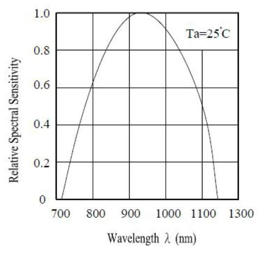

The Grove - Flame Sensor can be used to detect fire source or other light sources of the wavelength in the range of 760nm - 1100 nm. It is based on the YG1006 sensor which is a high speed and high sensitive NPN silicon phototransistor. Due to its black epoxy, the sensor is sensitive to infrared radiation. In fire fighting robot game, the sensor plays a very important role, it can be used as a robot eyes to find the fire source.
Model: SEN05082P

| Item | Min | Typical | Max | Unit |
|---|---|---|---|---|
| Voltage | 4.75 | 5.0 | 5.30 | VDC |
| Current | / | 20 | / | mA |
| Range of Spectral Bandwidth | 760 | 940 | 1100 | nm |
| Detection range | 0 | ~ | 1 | m |
| Response Time | 15 | μS | ||
| Operating Temperature | -25 | ~ | 85 | ℃ |
The module is mainly used to detect the infrared light. It outputs digital signal 0 and 1 through a Comparator output. The output value will be 0 when infrared light is detected. And the sensitivity is adjustable by the precision potentiometer.
Let's use it to control. When the output value is 0, the led will light up.
/******************************************************************************/
#define SENSOR 3 //connect SENSOR to digital pin3
#define LED 2//connect Grove - LED to pin2
void setup()
{
pinsInit();
}
void loop()
{
if(isFlameDetected())
turnOnLED();
else turnOffLED();
}
/********************************/
void pinsInit()
{
pinMode(FLAME_SENSOR, INPUT);
pinMode(LED,OUTPUT);
digitalWrite(LED,LOW);
}
void turnOnLED()
{
digitalWrite(LED,HIGH);
}
void turnOffLED()
{
digitalWrite(LED,LOW);
}
boolean isFlameDetected()
{
if(digitalRead(FLAME_SENSOR))
return false;
else return true;
}
The sensor can detect the light source whose wavelength is in the range of 760nm - 1100 nm. The below picture shows the spectral sensitivity.

If you have questions or other better design ideas, you can go to our forum or wish to discuss.
Copyright (c) 2008-2016 Seeed Development Limited (www.seeedstudio.com / www.seeed.cc)